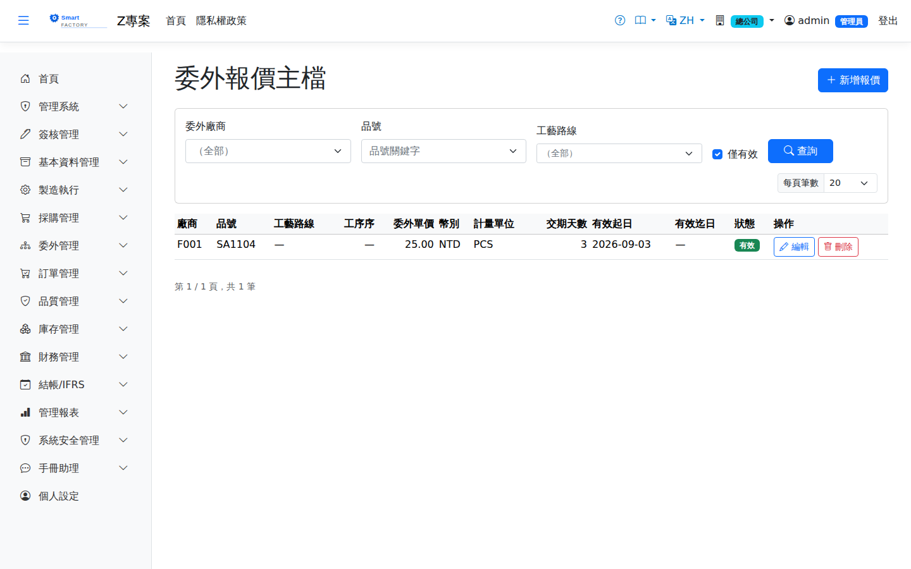

委外報價主檔Outsource Quotation
路由：/OutsourceQuotation | 加工廠 × 工序報價維護Route: /OutsourceQuotation | Subcontractor × operation price maintenance
維護各加工廠對品號/工序的加工單價、幣別與有效期間，供委外採購單自動帶價。Holds each subcontractor's processing price, currency and validity period per product and operation, which outsource POs use to fill in prices automatically.

委外報價主檔畫面截圖（示意，實際欄位/資料依權限與查詢條件而異）Outsource quotation screenshot (illustrative; actual fields and data vary by permission and query criteria)
查詢Search
1
查詢列輸入條件後點「查詢」；欄位標題可點擊排序，清單下方有分頁導航。Enter your criteria on the query bar and click "Search"; column headers can be clicked to sort, and the paging controls sit below the list.
作業流程Process
維護報價Maintaining quotations
1
點「新增」，選擇加工廠、品號/工序，填單價、幣別與有效日。Click "Add", pick the subcontractor and the product/operation, then enter the price, currency and validity dates.
2
同條件多筆報價時，委外採購單取有效期間內最新一筆。When several quotations match, the outsource PO takes the most recent one within its validity period.
欄位說明Field reference
查詢條件Query criteria
| 條件Condition | 說明Guide |
|---|---|
| 委外廠商 / 品號 / 工藝路線Subcontractor / Product / Routing | 各自縮小查詢範圍each narrows the query scope |
| 僅顯示有效Active only | 只列出目前在有效期間內且啟用的報價Lists only quotations that are active and within their validity period |
報價欄位Quotation fields
| 欄位Field | 說明Guide |
|---|---|
| 廠商Supplier | 必填Required 提供此報價的委外廠商Subcontractor offering this quotation |
| 品號Item | 必填Required 委外加工的料件Item sent out for processing |
| 工藝路線 / 工序序Routing / Op Seq | 此報價適用的途程與工序；委外採購單依此帶出單價Routing and operation this quotation applies to; outsource POs take the price from it |
| 委外單價Unit Price | 必填Required 該工序每單位的委外加工費Outsource processing fee per unit for this operation |
| 幣別Currency | 報價的交易幣別；入帳時依匯率換算本位幣Transaction currency of the quotation; it is converted to local currency at posting |
| 計量單位Unit of Measure | 單價對應的計量單位Unit of measure the price applies to |
| 交期天數Lead Days | 廠商承諾的加工天數，供 MRP 與排程推算委外前置期Processing days promised by the subcontractor, used by MRP and scheduling to derive the outsourcing lead time |
| 有效起日 / 有效迄日Effective From / Effective To | 報價的適用期間；委外採購單以單據日期落在區間內者為準Validity period of the quotation; an outsource PO uses the one whose period contains the document date |
| 狀態Status | 啟用／停用。停用的報價不會被新單據引用Active or inactive. Inactive quotations are never pulled into new documents |